Практичний досвід · журнал «ДентАрт» 2025 №2
Застосування комплексних біорегуляційних препаратів ТМ Heel у лікуванні альвеоліту
APPLICATION OF COMPLEX BIOREGULATORY PRODUCTS HEEL™ IN THE TREATMENT OF ALVEOLITIS
Класичний підхід до лікування альвеоліту передбачає антисептичні промивання, знеболення та місцеве застосування препаратів, що стимулюють загоєння. Проте цей підхід має низку недоліків: обмежений протизапальний ефект, недостатній вплив на регенерацію тканин та ризик рецидиву. Уникнути цього допомагають препарати ТМ Heel, які мають комплексну дію — зменшують запалення, покращують мікроциркуляцію і стимулюють регенерацію тканин.
Їхній багатокомпонентний склад дозволяє забезпечити системний підхід до лікування, що суттєво покращує клінічні результати. У статті викладено принципи лікування цими препаратами та на клінічних прикладах показано їх ефективність.
Альвеоліт — це запальне ускладнення, що виникає після екстракції (видалення) зуба і характеризується вираженим больовим синдромом, набряком та порушенням нормального процесу загоєння лунки. Це досить поширена патологія, яка може розвинутися внаслідок порушення формування або втрати згустку крові, інфікування рани або недостатньої гігієни ротової порожнини.
Одним із ключових факторів є порушення утворення або випадіння кров'яного згустку. Після видалення зуба в лунці формується захисний кров'яний згусток, який виконує важливу функцію — закриває кісткову тканину від проникнення мікроорганізмів та сприяє загоєнню. Якщо цей згусток руйнується або вимивається, наприклад, внаслідок надто інтенсивного полоскання ротової порожнини у перші дні після операції, це створює сприятливі умови для проникнення бактерій та розвитку запального процесу.
Ще однією розповсюдженою причиною альвеоліту є інфекційне зараження. Наявність у ротовій порожнині каріозних зубів, пародонтиту або інших осередків інфекції значно підвищує ризик запалення в зоні видаленого зуба. Бактерії можуть легко проникати в лунку, особливо якщо імунна система ослаблена, що призводить до розвитку запального процесу з можливим утворенням гною.
Недотримання правил післяопераційного догляду також відіграє важливу роль у розвитку ускладнень. Куріння, вживання алкоголю, недостатня гігієна ротової порожнини або механічне подразнення лунки (наприклад, використання зубочисток або вживання занадто жорсткої їжі) можуть спровокувати запалення і ускладнити процес загоєння. Особливо небезпечним є куріння, оскільки нікотин та інші шкідливі речовини негативно впливають на кровообіг та імунну відповідь організму, що значно уповільнює процеси регенерації.
До групи підвищеного ризику також входять пацієнти, які перенесли складне хірургічне втручання, наприклад, при видаленні ретенованих або дистопованих зубів. Чим складніша операція, тим вищий ризик розвитку ускладнень, оскільки під час таких маніпуляцій травмується велика кількість тканин, що створює додаткові передумови для розвитку запалення.
Альвеоліт має характерні симптоми, що дозволяє своєчасно запідозрити його розвиток. Одним із перших і найбільш виражених симптомів є інтенсивний пульсуючий або ниючий біль, що може віддавати у вухо, скроню або щелепу. Зазвичай біль посилюється на другий-третій день після видалення зуба і не минає навіть при прийомі звичайних знеболювальних препаратів.
Також для альвеоліту характерне почервоніння і набряк слизової оболонки навколо лунки. Візуально може спостерігатися запалення тканин, а сам отвір, де раніше був зуб, може мати патологічний вигляд — залишатися відкритим, заповненим залишками їжі або покритим сірувати нальотом.
Ще одним важливим симптомом є неприємний запах із рота, який з'являється через розвиток гнійного процесу. Це свідчить про активне розмноження бактерій у ділянці рани, що може призвести до серйозніших ускладнень, якщо не почати лікування.
У деяких випадках можливе загальне погіршення самопочуття, підвищення температури тіла, відчуття слабкості та нездужання. Ці симптоми вказують на активний запальний процес, який може поширюватися на сусідні тканини.
Класичний підхід до лікування альвеоліту передбачає антисептичні промивання, знеболення та місцеве застосування препаратів, що стимулюють загоєння. Проте цей підхід має низку недоліків: обмежений протизапальний ефект, недостатній вплив на регенерацію та ризик рецидиву. Саме тому було обрано препарати ТМ Heel, які мають комплексну дію — зменшують запалення, покращують мікроциркуляцію та стимулюють регенерацію тканин. Їхній багатокомпонентний склад дозволяє забезпечити системний підхід до лікування, що суттєво покращує клінічні результати.
У своїй професійній діяльності я активно застосовую біорегуляційні препарати торгової марки Heel, які зарекомендували себе як ефективні засоби в комплексній терапії різних патологічних станів. Ці препарати мають широкий спектр дії, природний склад і високий рівень безпеки, що робить їх незамінними в сучасній медичній практиці.
До найчастіше використовуваних препаратів належать:
Траумель С — універсальний протизапальний засіб з альтернативним механізмом дії, який усуває запалення, а не блокує його. Він широко використовується для терапії больового синдрому запального генезу будь-якої локалізації, а також при гострій травмі, в тому числі і операційній. Завдяки своєму багатокомпонентному складу препарат сприяє зменшенню набряку, усуненню больового синдрому та прискоренню відновлення пошкоджених тканин. Ці властивості препарату дозволяють ефективно застосовувати його при гнійно-запальних процесах і травмах тканин щелепно-лицевої зони: при захворюваннях і травматичних ушкодженнях слизової оболонки ротової порожнини, пародонта, пульпи, для профілактики і лікування ускладнень після імплантації та видалення зубів, хірургічних операцій і т. п.
Лімфоміозот — препарат із лімфодренажним та детоксикаційним ефектом. Використовується для стимуляції роботи лімфатичної системи, покращення виведення токсинів з організму, а також у комплексній терапії хронічних запальних процесів. Завдяки своїй дії сприяє зміцненню імунної системи та підвищенню загальної резистентності організму.
Мукоза композитум — багатокомпонентний біорегуляційний препарат, який демонструє виражену регенераторну, протизапальну та імуностимулюючу дію. У контексті лікування альвеоліту його застосування є патогенетично обґрунтованим, оскільки препарат сприяє відновленню морфофункціональної цілісності слизової оболонки лунки зуба, активує місцеві репаративні процеси, нормалізує мікроциркуляцію та знижує інтенсивність запального інфільтрату. Завдяки впливу на клітинні та гуморальні механізми імунної відповіді Мукоза композитум підвищує місцеву резистентність тканин, що особливо актуально у разі ускладненого перебігу післяекстракційного періоду.
Завдяки комплексному використанню цих препаратів можна досягти високих результатів у лікуванні та відновленні організму, а також значно покращити якість життя пацієнтів.
У цій статті буде розглянуто механізм розвитку альвеоліту, його види та ефективність комплексного лікування із застосуванням препаратів Heel на основі клінічних випадків.
Клінічні випадки
Нижче подано приклади трьох клінічних випадків лікування альвеоліту із застосуванням препаратів Heel, в яких продемонстрована ефективність комплексного підходу до терапії цього ускладнення.
Клінічний випадок 1
У першому випадку пацієнт, 32 роки, звернувся із сильним болем через 5 днів після видалення зуба 38. Під час огляду було виявлено відсутність кров'яного згустку та оголення кістки, що свідчило про розвиток альвеоліту. Було зроблено промивання лунки розчином хлоргексидину для очищення від патогенної флори, після чого застосовано аплікації гелю Траумель С, який має виражену протизапальну, знеболювальну та регенераційну дію. Для системної підтримки організму призначено Лімфоміозот внутрішньом'язово (1 ампула через день, 5 ін'єкцій) з метою активації лімфодренажу та Мукоза композитум підслизово (1 ампула через день, 5 ін'єкцій) для покращення регенерації слизової оболонки. Уже через 7 днів було відзначено значне зменшення болю та активне загоєння лунки.
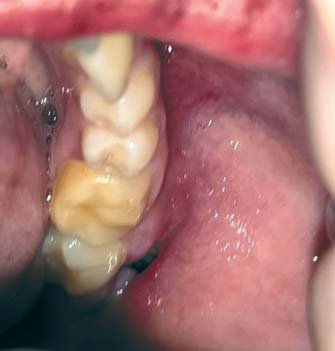
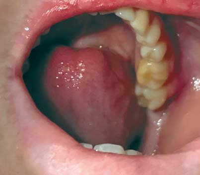
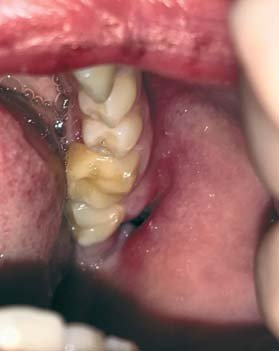
Клінічний випадок 2
У другому випадку чоловік, 45 років, звернувся зі скаргами на сильний біль, набряк та підвищену температуру тіла (37,8°C) після видалення зуба 38. Огляд виявив наявність гнійного ексудату, що свідчило про розвиток гнійного альвеоліту. Було зроблено розкриття і кюретаж лунки для усунення гнійного вмісту та очищення ураженої ділянки. Додатково призначені аплікації Траумель С для місцевого протизапального та знеболювального ефекту. Для підтримки організму застосовувався Лімфоміозот внутрішньом'язово через день, що сприяло зменшенню набряку та детоксикації, а також робилося полоскання розчином Мукоза композитум для активізації процесів регенерації та запобігання повторному інфікуванню. Уже через 10 днів усі симптоми зникли, що свідчило про ефективність лікування.
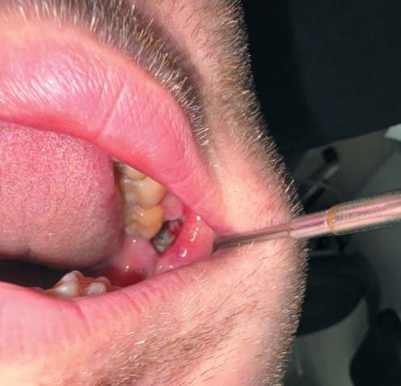
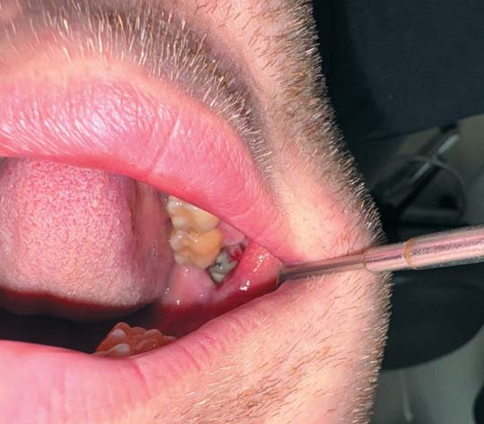
Клінічний випадок 3
У третьому випадку пацієнт, 58 років, звернувся зі скаргами після видалення зуба 16, де розвинувся серозний альвеоліт. Хоча стан не супроводжувався значним набряком або температурною реакцією, пацієнт потребував відповідного лікування. Були призначені полоскання антисептичними розчинами для зменшення бактеріального навантаження, місцеве застосування Траумель С для знеболення і прискорення загоєння, а також системна підтримка у вигляді ін'єкцій Лімфоміозоту внутрішньом'язово та Мукоза композитум підслизово. Уже через 6 днів пацієнт повністю одужав, а лунка загоїлася без ускладнень.
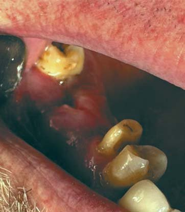
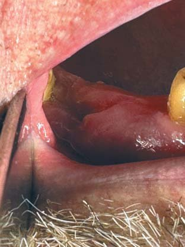
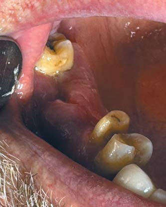
Детальний клінічний випадок
Пацієнтка, 25 років, звернулася до стоматолога через 4 дні після видалення зуба 48 зі скаргами на сильний біль, набряк м'яких тканин нижньої щелепи та неприємний запах із рота.
При об'єктивному огляді виявлено відсутність кров'яного згустку в лунці, що є ключовою ознакою альвеоліту. Спостерігалися оголення кісткової тканини, що свідчило про порушення процесу загоєння, а також виражена болючість при пальпації країв лунки та навколишніх тканин. Ясна навколо ураженої ділянки були гіперемованими і запаленими.
На основі клінічної картини було встановлено діагноз: альвеоліт лунки зуба 48 (постекстракційне ускладнення).
З метою ефективного лікування пацієнтці була призначена комплексна терапія, що включала місцевий вплив на осередок ураження та системну терапію для прискорення регенерації тканин.
Місцева терапія передбачала промивання лунки антисептичним розчином хлоргексидину для очищення та дезінфекції. Далі робилася аплікація гелю Траумель С, що має протизапальну, аналгетичну та регенераційну дію. Для стимуляції загоєння лунки було накладено пов'язку з марлевою турундою, змоченою в Мукоза композитум, який сприяв відновленню слизової оболонки та підвищенню місцевого імунітету.
Системна терапія включала введення Лімфоміозот (1 ампула внутрішньом'язово через день) для активації лімфодренажу, зменшення запалення та прискорення виведення токсинів, а також Мукоза композитум (1 ампула підслизово) для покращення регенерації тканин.
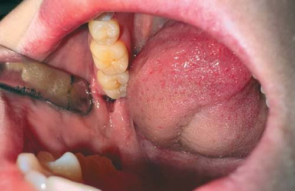
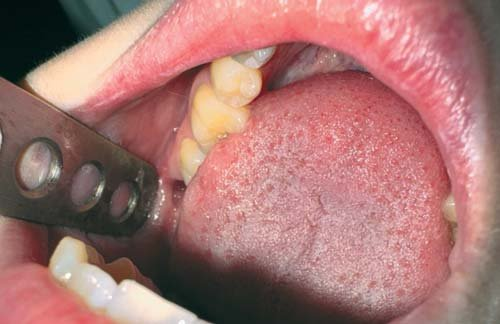
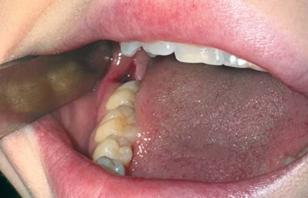
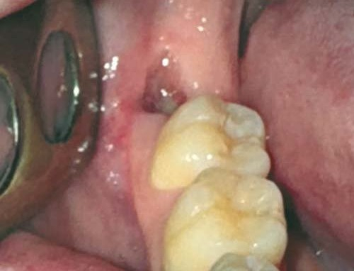
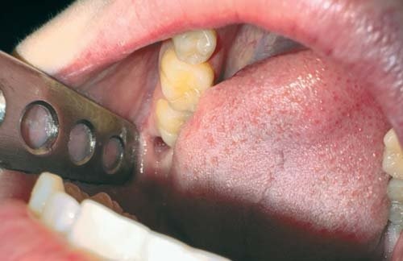
Динаміка лікування була позитивною: на 3-й день відзначалося зменшення болю та зниження набряку, на 7-й день лунка почала активно заповнюватися грануляційною тканиною, а на 10-й день вона була повністю закрита, безболісна, без ознак запалення.
Таким чином, застосування комплексної терапії на основі біорегуляційних препаратів ТМ Heel дозволило швидко купірувати запальний процес, запобігти нагноєнню та значно прискорити загоєння лунки. Завдяки правильному поєднанню місцевого лікування та системної терапії вдалося досягти позитивного ефекту вже протягом перших днів лікування.
Висновки
Застосування біорегуляційних препаратів торгової марки Heel, таких як Траумель С, Лімфоміозот і Мукоза композитум, у комплексній терапії альвеоліту забезпечує широкий спектр позитивного впливу на патологічний процес, що сприяє ефективному лікуванню та швидкому відновленню пацієнта. Завдяки багатокомпонентному складу та унікальним властивостям цих препаратів вдається досягти значного зменшення запалення та больового синдрому, що є ключовим моментом у терапії альвеоліту. Їхня протизапальна та аналгетична дія допомагає усунути дискомфорт, що не лише покращує самопочуття пацієнта, але й сприяє нормалізації функціонування ураженої ділянки, підвищуючи якість життя хворого.
Крім того, використання біорегуляційної терапії сприяє покращенню мікроциркуляції, що є надзвичайно важливим для оптимального перебігу процесів регенерації. Нормалізація кровобігу в ділянці патологічного осередку забезпечує краще надходження кисню та поживних речовин до пошкоджених тканин, що значно прискорює процеси загоєння. Водночас активізація мікроциркуляції сприяє ефективнішому виведенню токсичних продуктів запалення, що додатково знижує ризик ускладнень та сприяє швидшому відновленню слизової оболонки.
Ще одним важливим аспектом дії препаратів Траумель С, Лімфоміозот та Мукоза композитум є їхня здатність стимулювати процеси регенерації слизової оболонки, що є вирішальним у лікуванні альвеоліту. Завдяки активації природних механізмів відновлення відбувається швидке заповнення післяекстракційної лунки грануляційною тканиною, що знижує ймовірність розвитку ускладнень, таких як вторинна інфекція або формування хронічного запального процесу.
Комплексний вплив на запальний осередок, покращення локального імунітету та нормалізація обмінних процесів сприяють скороченню загального періоду загоєння. Біорегуляційна терапія забезпечує більш фізіологічний та природний перебіг відновних процесів, що дозволяє значно зменшити потребу у використанні агресивних медикаментозних засобів, таких як антибіотики чи нестероїдні протизапальні препарати. Це особливо актуально для пацієнтів із супутніми хронічними захворюваннями або ослабленою імунною системою, оскільки дозволяє уникнути додаткового медикаментозного навантаження на організм.
Зважаючи на все зазначене, застосування препаратів Траумель С, Лімфоміозот та Мукоза композитум у лікуванні альвеоліту є ефективним і безпечним підходом, що не лише усуває симптоматику, але й діє на першопричину захворювання. Завдяки комплексному лікувальному впливу ці препарати стають важливим елементом сучасної терапії альвеоліту, сприяючи швидкому і повноцінному відновленню пацієнтів.
Література
- Ковальчук Л. О., Петренко М. І. Ідіопатичний фіброзуючий альвеоліт: сучасні підходи до діагностики та лікування. — Український журнал пульмонології. — 2010. — № 5 (2). — С. 67–73.
- Filippi A., Pohl Y. Dry socket: prevention and treatment. Quintessence International. 2021; 52(2):135–140.
- Heine H., Schmolz M. Biological role of Traumeel in wound healing. Biomed Pharmacother. 2019; 72(3):130–135.
- Інструкція по використанню препаратів Траумель С, Лимфоміозот, Мукоза композитум. Heel GmbH, 2023.
- Дмитрук О. В., Смирнов І. П. Етіопатогенез альвеоліту: аналіз сучасної літератури. — Медичний огляд України. — 2008. — № 7 (1). — С. 45–52.
- Іванов П. П., Петров С. А. (2012). Екзогенний алергічний альвеоліт: патогенез і принципи лікування. — Журнал клінічної пульмонології. — 2012. — № 10 (3), 112–119.
- Horowitz M. A., Klein R. J. Advances in the management of hypersensitivity pneumonitis. European Respiratory Review, 2015. 24 (132), 102–110.
- Brown A. R., Jones T. M. Allergic alveolitis: diagnostic challenges and treatment options. Chest, 2017. 152 (4), 834–841.